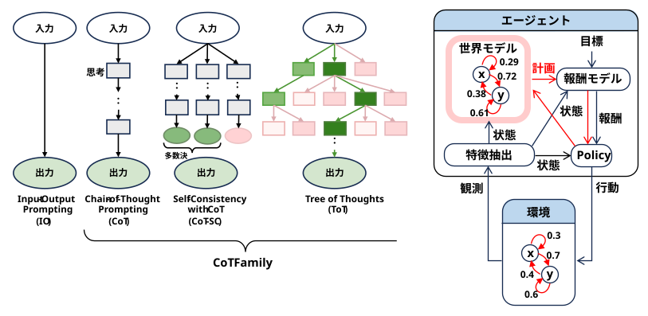

CoT（Chain of Thought: 思考の連鎖）と「世界モデル（World Model）」は、本質的な目的やアプローチは異なりますが、「予測を繰り返してシミュレーションを行う」という構造において非常に強い類似性を持っています。
大まかに言うと、CoTは「言語空間でのシミュレーション」であり、世界モデルは「物理空間（または抽象空間）でのシミュレーション」と捉えることができます。 \[ \begin{array}{l|l|l} \textbf{項目} & \textbf{CoT(思考の連鎖)} & \textbf{世界モデル} \\ \hline \textbf{主な対象ドメイン} & \text{言語・論理・数理（テキストベース）} & \text{物理・空間・因果関係（映像・状態）} \\ \hline \textbf{何をするか} & \text{次の「思考トークン（単語）」を予測し、} & \text{次の「世界の環境状態（映像や物理量）」} \\ & \text{段階的に推論を進める} & \text{を予測する} \\ \hline \textbf{主な機能} & \text{言語による自己対話・論理シミュレーション} & \text{環境の変化を先読みする「想像力」} \\ & & \text{（シミュレータ）} \\ \hline \textbf{活用方法} & \text{正確な計算や、複雑な文章問題の解決} & \text{ロボットの制御、自動運転、ゲームの攻略など} \end{array} \]
最大のスゴ味であり共通しているのは、「自分の出した出力を次の入力にして、未来を予測し続ける」という点です。
どちらも、いきなり最終的な答え（または実際の行動）を出さず、内部で「中間プロセス」を挟むことで打率を上げようとします。人間がチェスで「こう動かしたら、相手はこう来て、その次は…」と頭の中で考えるプロセスそのものです。
AI研究の最前線では、「これらは別物」ではなく、「CoTを世界モデルのパーツとして使う」、あるいは「LLM自体が一種の世界モデルを内包している」という見方が強まっています。
例えば、AIエージェントが自律的にタスクをこなす際、CoT（言語による計画）を使って「まず部屋の状況を確認して、次にゴミ箱を探そう」と頭の中で組み立て、世界モデル（物理的予測）を使って「これを動かしたら倒れるかもしれない」と予測する、といった連携が行われています。
結論として：アプローチする領域（言葉か、物理か）は違えど、「段階的な予測によって未来をシミュレーションし、意思決定の精度を上げる」というアーキテクチャの思想において、CoTと世界モデルは非常に親戚に近い関係だと言えます。